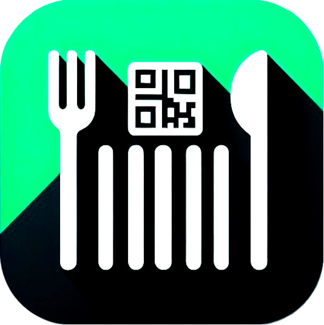

A food restriction scanner app
SafeEats is a mobile application designed to help users identify and manage food restrictions by scanning barcodes on food products. The app provides detailed information about the product, including its name, brands, ingredients, and potential allergens. Users can also manually enter EAN codes to fetch product details.
Prerequisites:
Installation Steps:
git clone https://github.com/0V3RR1DE0/SafeEats.gitcd SafeEatsflutter pub getflutter runPull requests are welcome. For major changes, please open an issue first to discuss what you would like to change.